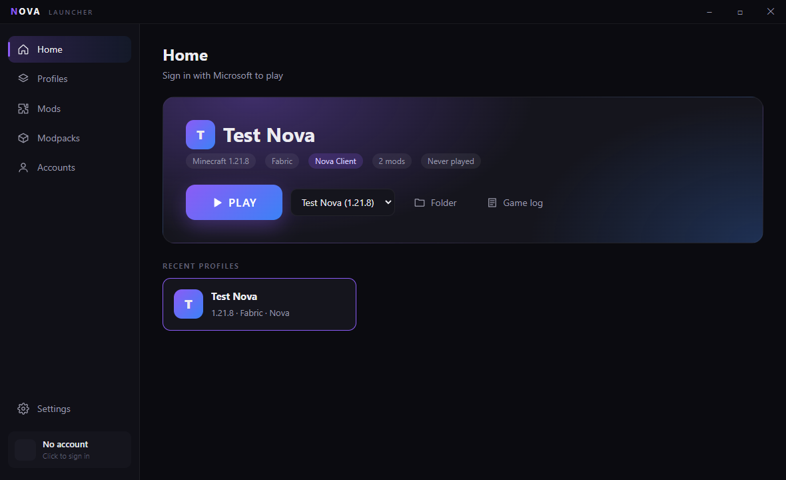
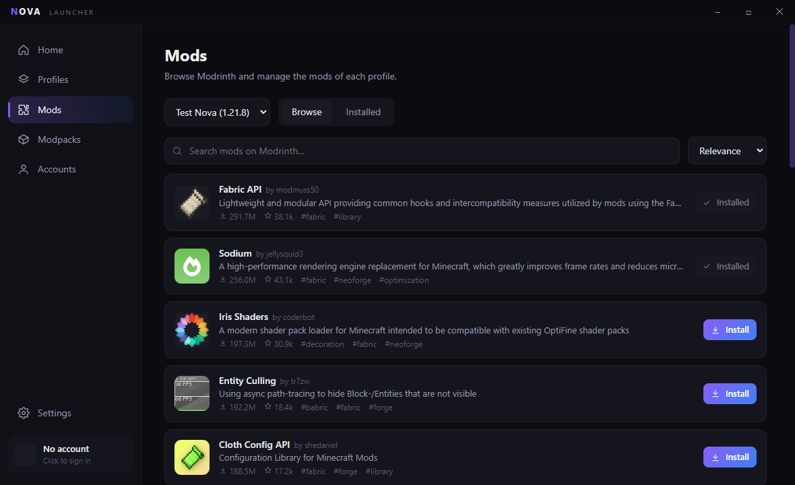

Nova is a modern Minecraft client with a drag-and-drop HUD editor, 60+ modules, shareable configs and its own launcher with mods and modpacks from Modrinth.
Version 1.0.1 · 82 MB · Windows 10/11 · Requires a purchased copy of Minecraft: Java Edition

The features you know from the best PvP clients, in a clean dark interface.
Smooth zoom with scroll-wheel control and looking around without turning your character.
Cross, dot, circle or T-shape with your own color, thickness, gap, outline and target color.
A colored outline and fill on the block you're looking at, matched to your theme.
Lower fire, plus no pumpkin, vignette or portal overlay. A clean view.
Bind any key to any module, choose Toggle or Hold mode, and see conflicts with Minecraft controls.
Create, duplicate and export your settings, and share them with a single NOVA1: code.
Set the time of day just for you: day, sunset or night.
Training dummies, combo and reach counters and hit sounds, in your own world only.
Star modules, change the sorting and find anything instantly. Just start typing.
Pick elements from an icon grid and they appear in the middle of the screen. Drag them anywhere, resize from the corner, and set colors, font, opacity and background.
One app for versions, profiles, mods, modpacks and accounts.

Every profile has its own Minecraft version, worlds folder and mods. Fabric and Nova install automatically.
Search, click "Install" and dependencies come along automatically. Enable or disable any mod with one switch.
Install modpacks from Modrinth or import .mrpack files. Every pack becomes its own profile.
Sign in on Microsoft's own page (the launcher never sees your password) and switch accounts in one click.
Get the launcher with everything built in, or just the mod for your own launcher.
Windows installer with Nova Client, mods and modpacks built in.
Download .exe (82 MB) Windows 10/11 · 64-bitDrop it into your mods folder. Requires Fabric Loader and Fabric API for 1.21.8.
The installer isn't signed with a paid code-signing certificate yet, so SmartScreen doesn't recognise it. Click "More info", then "Run anyway".
No. Nova only has visual and quality-of-life features (HUD, zoom, crosshair, keybinds). Tools like training dummies only work in your own singleplayer world.
Yes. The launcher signs in with a Microsoft account that owns Minecraft: Java Edition. Non-premium accounts are not supported.
Install Fabric Loader for 1.21.8, put Fabric API and nova-client-1.0.0.jar in your .minecraft/mods folder, and start the Fabric profile. Right Shift opens the GUI.
In the config/nova folder of your instance. You can export configs and share them with a code from inside the game.